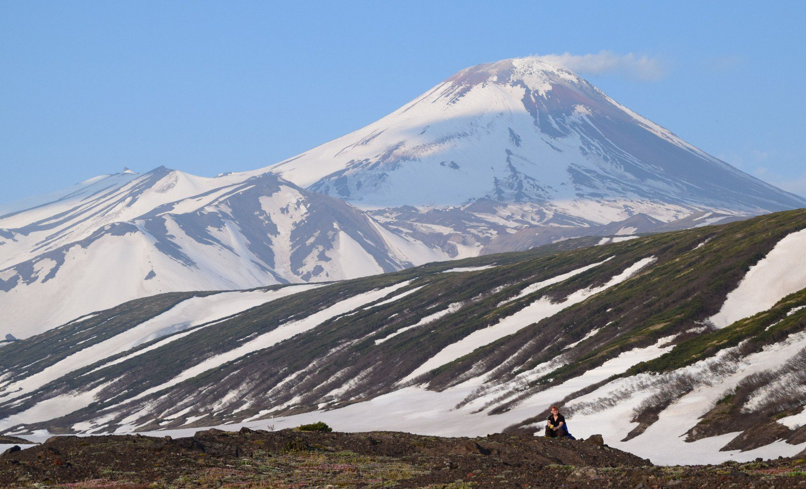

Мы рады приветствовать вас в мире захватывающих приключений и уникальных природных красот Камчатки! Наша команда профессиональных гидов предлагает вам незабываемые экскурсии, которые позволят вам увидеть лучшие места нашего удивительного края: величественные вулканы, прозрачные озера и пышные леса, а также познакомиться с уникальной флорой и фауной региона.
Ближайшие экскурсии:
-
Прогулка на долину гейзеров - 15.05
Откройте для себя удивительный мир природных чудес, где гейзеры и горячие источники создают уникальный ландшафт, полный захватывающих зрелищ и звуков.

-
Завораживающая экскурсия на Курильское озеро - 28.05
Погрузитесь в атмосферу спокойствия и красоты, наслаждаясь живописными видами на озеро, окруженное величественными горами и богатой флорой и фауной.

-
Пешеходная экскурсия на вулкан Авачинский - 01.06
Присоединяйтесь к захватывающему восхождению на один из самых активных вулканов Камчатки, где вас ждут потрясающие панорамы и уникальные геологические образования.

Наши гиды
-
Наталья
Опытный гид с более чем 10-летним стажем работы на Камчатке. Она специализируется на экотуризме и активно занимается защитой окружающей среды. Анна прекрасно знает местную флору и фауну и может рассказать о редких видах животных и растений, а также о важности сохранения экосистемы региона. Ее экскурсии всегда насыщены интересными фактами и увлекательными историями о природе Камчатки.

-
Нина
Профессиональный гид и геолог, которая увлечена изучением вулканов и геологических процессов. Она проводит экскурсии по вулканическим районам Камчатки, объясняя участникам, как образовались знаменитые вулканы региона. Екатерина также делится своими знаниями о геологических явлениях и истории формирования ландшафта, что делает ее экскурсии не только познавательными, но и увлекательными.

-
Александра
Сертифицированный экскурсовод и культуролог, которая фокусируется на культурном наследии и традициях коренных народов Камчатки. Она проводит экскурсии по историческим местам, рассказывая о культуре, обычаях и образе жизни местных жителей. Мария также организует мастер-классы по традиционным ремеслам, что позволяет участникам глубже понять уникальную культуру региона.